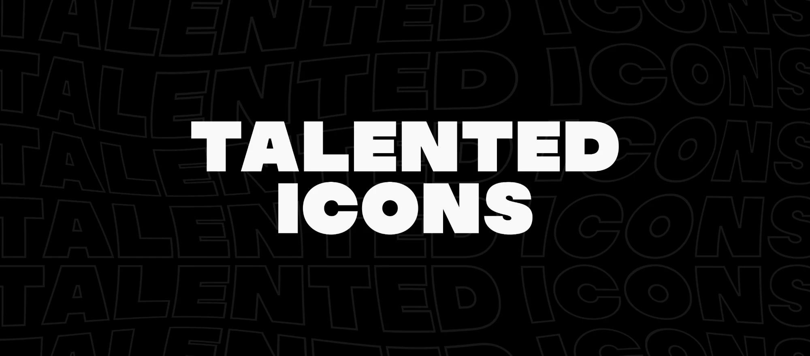
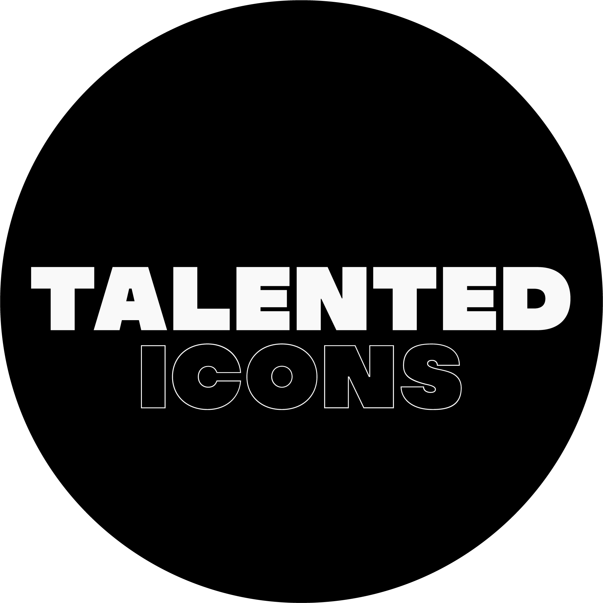

Brand exploration
The closest to your original circle logo, tightened up: heavy extended type, solid TALENTED over outlined ICONS, plus a blue full stop as the signature detail.
A one-line wordmark with ICONS outlined in blue, plus a standalone TI monogram for avatars and the favicon. The most corporate and the most flexible.
Takes the repeating outline pattern from your banner and builds it into the logo: the solid wordmark leaves outlined echoes behind it, the first one in blue. Loud and made for social.
Your originals, for reference

